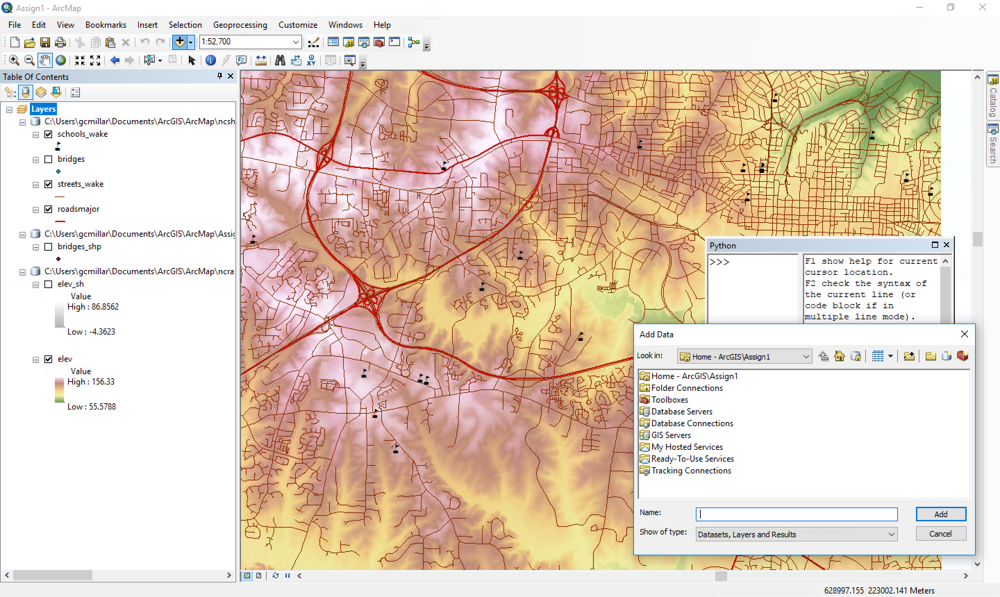
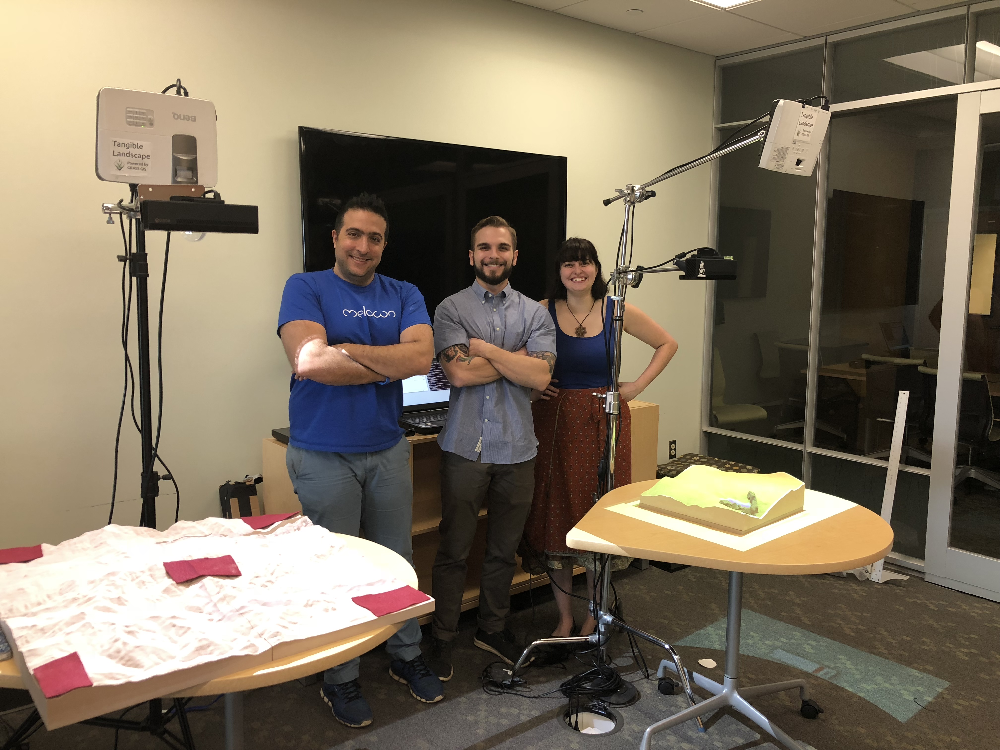

US-IALE 2018
Hands-on Methods for Teaching Landscape Form and Processes
Garrett C. Millar, Payam Tabrizian, Anna Petrasova, Vaclav Petras, Brendan Harmon, Helena Mitasova, Ross K. Meentemeyer
Good afternoon everyone, and thank you for coming to my talk. I'll be presenting new ways to teach about topics of Landscape Ecology, topics
that are being presented here at the conference this week.
Embodied Interaction
Embodied cognition: a link between perception & action
Feeling, action, & thought are functionally integral to cognition
First, lets briefly discuss the theory that motivates the research to follow.
Spatial Education
Spatially-focused curricula = improved student success
Difficult for students to visualize complex landscape processes
Limits students’ success in geoscience classrooms
Why is this?
Recently, spatial education curricula have more frequently been incorporating spatial thinking
techniques to improve students’ problem-solving skills
Teaching Methods for Terrain Analysis:
in-situ surveying
drawing contour maps
building physical models
First, here are a few typical methods used to teach Terrain analysis: On-site Surveying, Drawing of Contour Maps, &
Building Physical Models.
Graphical User Interfaces (GUIs)

Inflexible in use, and inadequate for users to perceive & process spatial information
Limit ways geospatial data can be represented
Solution?
Spatial analyses are also typically carried out with computers, or Grahical User Interfaces.
However, GUIs limit a users input to mouse & keyboards, and feedback to 2D graphics
Tangible User Interfaces (TUIs)
Offer more natural & intuitive mode of interaction
Allow users to cognitively grasp & physically manipulate 3D data
Connect intention, thought, action, & feedback
Help students better explore, model, visualize, & think about complex landscape processes
One solution may be Tangible User Interfaces, as they have previously been shown to enhance spatial ability by
affording embodied interaction and improving perception through visual and haptic feedback.
Tangible Landscape:
A tangible user interface powered by open source GIS
Tangible Landscape: Concept & Design
VIDEO
With Tangible Landscape you can hold a GIS in your hands - feeling the shape of the earth, sculpting its topography, and directing the flow of water.
Tangible Landscape is a tangible user interface that uses a physical representation of a landscape which students can
make changes to.
Interactions
Students can physically interact with digital models and simulations by:
sculpting surfaces (hands)
carving surfaces (knife)
placing waypoints (markers)
drawing walking routes (laser)
establishing viewpoints (marker)
planting vegetation (felt)
Tangible Landscape is also unique in that it allows students to interact with a landscape in many different ways
These various modes of interaction enable students to immediately see how they are changing terrain properties like
contours, hillslope steepness, or water flow.
Tangible Lessons
Water flow: flowpath, channeling, & ponding
Landforms: required participants to build & identify landforms
Cut & fill: participants changes landscapes based on provided contours
Using Tangible Landscape, we developed 3 tangible teaching lessons to teach the concepts of grading
(i.e., earthwork), geomorphology, and hydrology.
Water Flow
Your browser does not support the video tag.
Your browser does not support the video tag.
Your browser does not support the video tag.
flowpath(r.drain)
channeling(r.sim.water)
ponding(r.fill.dir)
The first lesson is Water Flow, or Hydrology. It is split into 3 parts... or "sub-tasks"
Landforms
Your browser does not support the video tag.
GRASS GIS module: r.geomorphon
The second is Landforms, which also contains 3 subtasks... simple, compound, & complex landforms.
Cut & Fill
Your browser does not support the video tag.
Your browser does not support the video tag.
The third is Cut & Fill, or Grading, where students must try to change landscapes to match a desired elevation
based on provided feedback.
Pilot Study:
Teaching Landscape Form & Processes
Research Objectives
Test the effectiveness of a hands-on method for teaching spatial concepts using Tangible Landscape by:
examining students’ ratings of the system’s usability & user experience
testing students’ acquisition & transfer of knowledge
In efforts to test the effectiveness of using a TUI to teach spatial concepts (specifically Terrain Analysis),
Procedure
Three, one-week sessions
Contained tangible lessons for teaching fundamentals of grading, geomorphology, & hydrology
Session format:
paper-based pretest
introduction explaining the lesson content
tangible lessons
paper-based posttest
Particpants:
16 graduate students from a Landform, Grading, & Site Systems course
Students worked in pairs for entire 3-week study
Interaction, feedback, & example solutions
Materials & Scoring
Topographic Map Assessment (TMA) (Newcombe et al., 2015)
Assessed students’ acquisition & transfer of spatial skills
Tangible Lesson Assessments
Measured student’s knowledge specific to tangible lesson content (landforms, cut & fill)
User Experience Survey
Examined how students perceived and interacted with Tangible Landscape, & how they collaborated to solve a problem
TMA: Administered in the 1st session & two weeks after the last session
Results
Knowledge Building: Tangible Lessons
Individual Scores
Mean Scores
Landforms pretest: Paired t-test (to determine if there was a significant difference between administration
time (Pre –> Post)) found no significant response accuracy differences
Results
Knowledge Building: TMA
Individual Scores
Mean Scores
Majority of participants (N = 12) scored above 70% .
Results
User Experience
All constructs pass the neutral value of 4 = students rated the system positively
Most advantageous aspects of Tangible Landscape?
ability to explore various solutions for the given problems (e.g., water flow, landforms, cut and fill)
physical objects allowed students to change parameters (e.g., location of solution points) very quickly
projected visual feedback helped them better understand the effects of changing those parameters
Most advantageous:
Discussion
Preliminary evidence for Tangible Landscape supporting improved user experience and marginal, task-specific
knowledge building
Knowledge building:
Ability to directly feel, grasp, and manipulate the various tangible materials
User Experience:
Students can try, see and feel, and directly experience multiple variations of a given solution
KNOWLEDGE BUILDING: However, this does not explain why only the cut and fill tangible lesson produced
an increase in assessment scores (from pre- posttest). Potentially, the ability to interact with 3D space
is more appropriate for learning about concepts of land surface grading–in comparison to other geospatial concepts.
Authors
Garrett C. Millar
PhD Student
Payam Tabrizian
PhD Student
Anna Petrasova
Postdoctoral Scholar
Vaclav Petras
PhD Candidate
Brendan Harmon
Assistant Professor
Helena Mitasova
Associate Director of Geovisualization
Ross Meentemeyer
Director
Acknowledgments
We would like to thank Carla Delcambre of the Landscape Architecture department at North Carolina State University for
working with us to implement this study in her course. We also thank the Landscape Architecture graduate students for
participating in the study.
Come see Tangible Landscape for yourself!

Questions?
Thank you!
Lastly, we were planning to demonstrate Tangible Landscape during this session,
but it made more sense to do so at the poster social.